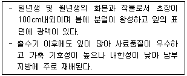
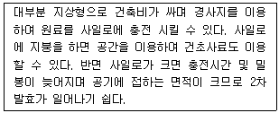
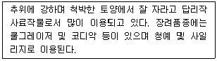

축산산업기사 (2012-03-04 기출문제)
1과목: 가축번식 육종학
1. 돼지의 생시 체중은 2kg 이고 출하시 체중은 107kg 이였으며 출하하는 데까지는 160일이 걸렸다고 한다. 이 때의 일당 증체량은?
- 0.66kg/일
- 0.76kg/일
- 1.50kg/일
- 1.52kg/일
(정답률: 78%)

2. 다음 호르몬 중 분만시 임신자궁에 영향을 미쳐 분만촉진의 역할을 하는 것은?
- LH(황체형성 호르몬)
- FSH(난포자극 호르몬)
- hCG(융모성 성선자극 호르몬)
- PGF2α
(정답률: 76%)
3. 어느 종돈장에서 체중이 90kg에 되었을 때 등지방층의 두께를 측정한 결과 돈군(豚群)의 평균 및 표준편차가 2.9±0.4cm였는데 이 한 형질에 대해서만 선발한 결과 선발군의 평균등지방층 두께는 2.4cm였다고 한다. 이 형질의 선발차는 얼마인가?
- 0.5cm
- 2.0cm
- -0.9cm
- -0.5cm
(정답률: 70%)
4. 일반적으로 한우의 평균 임신 기간은?
- 114~125일
- 140~145일
- 240~245일
- 280~285일
(정답률: 82%)
5. 분만시 자궁경관의 이완 및 치골결합의 분리를 일으키게 하는 호르몬은?
- progesterone(황체호르몬)
- relaxin(릴랙신)
- oxytocin(옥시토신)
- FSH(난포자극호르몬)
(정답률: 71%)
6. 산란계를 위한 난용종의 선발요건을 잘못 설명 한 것은?
- 다산성일 것
- 산란기간의 폐사율이 낮을 것
- 난중이 무거울 것
- 성숙체중이 클 것
(정답률: 83%)
7. 젖소에 있어 산유량이 7000kg이상인 암소들을 선발한 결과 평균 산유량은 8000kg이고 이 암소들이 속한 집단의 평균 산유량은 5000kg이었다고 하며 수소에서 선발이 이루어지지 않았다고 하면 선발차는?
- 3000kg
- 2000kg
- 1500kg
- 1000kg
(정답률: 51%)
8. 알을 품거나 병아리를 기르는 성질을 말하며 주로 겸용좀과 육용종에 있어서 많이 나타나는 성질은?
- 산란지속성
- 조숙성
- 취소성
- 성장률
(정답률: 84%)
9. 웅성 호르몬(Androgen)의 기능이 아닌 것은?
- 웅성생식기 분화
- 정자형성 촉진
- 제2차 성징 발현
- 세포막 변화
(정답률: 76%)
10. 선발의 기능이 아닌 것은?
- 새로운 유전자의 창조
- 유전능력의 향상
- 유전자 빈도의 변화
- 불량 개체의 도태
(정답률: 82%)
11. 돼지의 비육돈 생산에 가장 많이 이용되는 교배법은?
- 1대 잡종 이용
- 퇴교배
- 3품종 교잡법
- 순종교배
(정답률: 88%)
12. 육우에 있어서 잡종강세의 이용을 위한 교배법으로 적합하지 않는 것은?
- 동일 품종내 이계교배
- 두 품종간 교배에 이용
- 퇴교배
- 세품종간 윤환교배
(정답률: 71%)
13. 종축으로 선발된 돼지에 있어 선발차가 4kg이었고 그 형질에 대한 유전력이 20% 이면 이에 대해서 기대되는 유전적 개량량은?
- 0.8 kg
- 4 kg
- 20 kg
- 0.2 kg
(정답률: 79%)
14. 배반포(胚盤胞)의 생명을 유지하고 임신을 유지하는 호르몬은?
- 에스트로겐(estrogen)
- 릴랙신(relaxin)
- 프로게스트론(progestrone)
- 테스토스테론(testosterone)
(정답률: 73%)
15. 다음 중 임신이상으로 여겨지는 것이 아닌 것은?
- 출생전 폐사
- 자연유산
- 요막수종
- 태반정체
(정답률: 71%)
16. 일반적인 돼지의 인공수정시 정액을 주입하기 위한 주입기가 삽입되는 최적 부위는?
- 질 내
- 자궁경내
- 수란관 상부
- 자궁각내
(정답률: 67%)
17. 다음 젖소의 경제형질 중 유전력과 반복력이 가장 높은 것은?
- 비유량
- 유지량
- 유지율
- 번식능력
(정답률: 65%)
18. 다음 중 유우의 형질 중 근친교배에 가장 크게 영향을 받는 형질은?
- 번식효율
- 유 생산량
- 유 지방율
- 일당증체량
(정답률: 47%)
19. 다음 중 한우의 경제형질로 보기 어려운 것은?
- 번식능률
- 산유량
- 이유시 체중
- 도체품질
(정답률: 87%)
20. 난자와 정자가 만나서 수정이 이루어지는 부위로 가장 적합한 곳은?
- 난소
- 자궁
- 난관 협부
- 난관 팽대부
(정답률: 70%)
2과목: 가축사양학
21. 영양소의 흡수가 가장 왕성한 곳은?
- 소장
- 대장
- 위
- 맹장
(정답률: 73%)
22. 사료의 조단백질 함량이 40%이고 소화율이 70%일 때의 가소화조단백질(DCP) 함량은?
- 280%
- 72%
- 28%
- 20%
(정답률: 79%)
23. 비육우에 있어서 거세의 장점이 아닌 것은?
- 온순해진다.
- 육질이 향상된다.
- 체지방 축적이 많아진다.
- 사료의 이용효율이 증가한다.
(정답률: 67%)
24. 밀을 소나 돼지에 급여할 때의 가공 방법은?
- 분쇄
- 튀김
- 침지
- 볶기
(정답률: 74%)
25. 사료를 펠렛(pellet) 형태로 급여 할때의 효과에 대한 설명으로 옳지 않는 것은?
- 소화율이 개선된다.
- 가축의 선택채식이 방지된다.
- 유지율이 증가된다.
- 짧은 시간에 많은 사료를 먹일수 있다.
(정답률: 70%)
26. 소에 급여하는 사료의 약 70% 이상은 탄수화물로 되어 있으며 탄수화물은 세포 내용물(NSC)과 세포벽 물질(CWC)로 구분되는데 다음 중 세포벽 함유 물질이 아닌 것은?
- 셀롤로오스
- 펙 틴
- 헤미셀롤로오스
- 리그린
(정답률: 63%)
27. 종란의 수정율 부화율 및 란중(卵重)에 관여하는 지방산만으로 구성된 것은?
- oleic acid, erucic acid, clupanodonic acid
- linoleic acid, arachidonic acid, linolenic acid
- stearic acid, butyric acid, acetic acid
- propionic acid, lauric acid, formic acid
(정답률: 76%)
28. 젖소 사료속의 카로틴 함량은 유즙의 비타민 함량에 영향을 준다. 다음 중 가장 관계가 깊은 비타민은?
- 비타민 A
- 비타민 B1
- 비타민 C
- 비타민 D
(정답률: 62%)
29. 수수의 사료 가치를 저해하는 가장 큰 요인은?
- 탄닌(tannin) 함량이 많다.
- 옥수수보다 단백질이 많다.
- 카로틴(carotene) 함량이 적다.
- 옥수수보다 나이아신(niacin)이 많다.
(정답률: 71%)
30. 다음 가축 중 비타민 D2를 잘 이용하지 못하는 가축은?
- 소
- 돼지
- 닭
- 면양
(정답률: 72%)
31. 단백질은 다른 영양소로 대치할 수 없는 성질을 가지고 있다. 다음 중 단백질을 중요시한 영양가 표시법을 나타낸 것은?
- 사료효율
- 사료요구율
- 영양율
- 가소화 영양소 총량
(정답률: 62%)
32. 정상적으로 산란계를 사육하였다면 최고 산란율(Peak production)에 도달하는 시기는 초산 후 약 몇 개월 후 인가?
- 2개월 후
- 4개월 후
- 6개월 후
- 8개월 후
(정답률: 58%)
33. 일반적으로 가공형태별로 보면 청초의 섭취량이 많고 건초의 섭취량은 적은데 다음 중 번식우에 대한 조사료의 섭취 가능량(체중비, %)이 틀린 것은?
- 짚류 : 3 ~ 4%
- 사일리지 : 5 ~ 6%
- 근채류 : 6 ~ 8%
- 청예작물 : 8 ~10%
(정답률: 62%)
34. 다음 중 사료효율이 가장 좋은 경우는?
- 증체량과 사료섭취량이 비례적으로 증가하는 경우
- 증체량은 높으나 사료섭취량이 낮은 경우
- 증체량과 사료섭취량이 감소하는 경우
- 증체량은 감소하나 사료섭취량은 증가하는 경우
(정답률: 80%)
35. 새끼 돼지의 생후 10일령까지 필요한 철분의 양은?
- 100mg
- 200mg
- 300mg
- 400mg
(정답률: 62%)
36. 요오드가 높은 지방은 급여하면 체지방의 요오드가도 높아지게 되는데 어떤 지방이 되는가?
- 반연성지방
- 반경성지방
- 연성지방
- 경성지방
(정답률: 63%)
37. 체중이 600kg인 젖소가 유지율이 3.6%인 젖을 20kg 생산 할 때 1일 총단백질의 요구량은 몇 g인가?
- 2029
- 2129
- 2149
- 2229
(정답률: 53%)
38. 탄수화물의 기능을 설명한 것 중 틀린 것은?
- 지방산, 단백질의 합성에도 쓰인다.
- 가장 경제적인 에너지 발생 영양소이다.
- 체내에서는 지방으로만 축적된다.
- 뇌와 신경조직의 구성성분이다.
(정답률: 79%)
39. 경지방을 생산하는 사료는?
- 옥수수, 보리
- 고구마, 대두박
- 면실박, 야자박
- 전분박, 채종박
(정답률: 70%)
40. 비육우의 육성기에 조사료 다급시 장점이 아닌 것은?
- 배합사료 섭취량 증가
- 소화기관과 골격 발달
- 건강한 비육밑소 육성
- 불가식 지방 조기침착 방지
(정답률: 62%)
3과목: 축산경영학
41. 낙농경영에 있어서 자본 회전율이란?
- 소득 / 자본
- 조수입 / 투하자본액
- 생산비 / 자본
- 경영비 / 자본
(정답률: 71%)
42. 어느 농가에서 비육경영을 하여 얻은 조수입이 900만원이었고, 이 가운데 경영비가 540만원이었다고 한다. 이 농가의 비육경영 소득율은 얼마인가?
- 80%
- 60%
- 50%
- 40%
(정답률: 40%)
43. 다음 중 한계비용을 바르게 설명한 것은?
- 생산을 위해 지불할 수 있는 비용의 최대한계를 말한다.
- 생산을 위해 지불할 수 있는 비용의 최소한계를 말한다.
- 추가적으로 생산물 1단위를 더 생산하는데 필요로 하는 비용의 증가분을 말한다.
- 추가적으로 생산물 1단위를 더 생산하는데 필요로 하는 비용의 한계를 말한다.
(정답률: 55%)
44. 가경력(arability)이 있는 토지에 관한 설명 중 옳지 않는 것은?
- 배수(排水)가 잘 되는 토지
- 암반과 자갈이 많은 토지
- 보수력(保水力)이 강한 토지
- 경토(耕土)가 깊고 심토(深土)가 좋은 토지
(정답률: 73%)
45. 경제가 발전하고 상업적 영농이 진전됨에 따라 축산경영 조직도 변화되기 마련이다. 그 변화 내용과 거리가 먼 것은?
- 집약적 작목에서 조방적 작목으로 교체되는 경향이 있다.
- 토지의존도가 낮고 규모 확대화 기업화가 용이한 중소 가축의 상품 생산화가 진전 된다.
- 부업축산이 전업적 축산으로 발전된다.
- 축산물 생산의 계열화가 나타난다.
(정답률: 66%)
46. 축산자본회전율 0.4일 경우 총축산 자본투하액만큼의 축산물가액을 얻으려면 기간이 얼마나 걸리는가?
- 1.5년
- 2.5년
- 2년
- 4년
(정답률: 66%)
47. 축산경영 공동 조직화의 배경이 아닌 것은?
- 생산요소의 공동구매
- 생산물의 공동판매
- 생산요소의 공동소유 및 공동이용
- 자기완결적 생산
(정답률: 77%)
48. 축산경영의 환경조건 중에서 자연적 조건이 아닌 것은?
- 기상조건
- 토지조건
- 급수조건
- 목장과 시장과의 거리
(정답률: 73%)
49. 다음 중 생산함수의 성질을 나타내지 않는 것은?
- 총 생산이 최고일 때 한계생산은 영(0)이 된다.
- 한계생산과 평균생산이 교차하는 점에서 평균생산이 최고이다.
- 평균생산이 증가하는 한 한계생산은 증가한다.
- 총생산곡선의 변곡점에서 한계생산은 최고가 된다.
(정답률: 49%)
50. 다음 중 유동자본재가 아닌 것은?
- 종축
- 원료
- 사료
- 현금
(정답률: 72%)
51. 축산부기의 목적이 아닌 것은?
- 경영성과의 파악
- 축산겨영 개선의 기초 자료 제공
- 재무상태의 파악
- 축산물 판매 가격의 결정
(정답률: 74%)
52. 다음 중 가족 노동력의 큰 장점에 해당되는 것은?
- 노동 감독이 필요하다.
- 성과가 소득과 직결된다.
- 노동시간에 구애를 받는다.
- 노동수요에 밀접한 관계에 있다.
(정답률: 74%)
53. 다음 중 축산 경영비로 직접 계산 될 수 없는 것은?
- 현물로 지불한 노임
- 경운기 구입비
- 사료비
- 가축치료비
(정답률: 58%)
54. 이윤 극대화의 조건이 아닌 것은?
- 한계수입 = 한계비용
- 균형의 근방에서 한계비용이 하강적일 것
- 균형점에서 가격(한계수입)이 평균비용보다 높을 것
- 균형점의 근방에서 평균 비용이 상승적일 것
(정답률: 53%)
55. 자기노동보수를 바르게 표현한 것은?
- 농업소득-(자기토지자본이자+자기자본이자)
- 농업소득-기계비
- 농업조수입-(자기토지자본이자견적액+자기자본이자견적액)
- 농업조수입-(물재비+노임)
(정답률: 60%)
56. 기업적 축산경영의 목표로서 적합한 항목은?
- 소득의 극대화
- 가족노동 중시
- 이윤의 극대화
- 경영과 가계의 미분리
(정답률: 76%)
57. 축산경영의 궁극적인 목표로 가장 적합한 것은?
- 생산기술의 최대화
- 생산요소의 절감
- 생산량의 최대화
- 순수익 또는 소득의 최대화
(정답률: 76%)
58. 축산경영에 대한 설명으로 옳지 않는 것은?
- 축산경영자는 일정한 목적을 가지고 경영체를 운영한다.
- 축산경영자는 기초 생산요소인 토지 자본 노동력을 합리적으로 이용하여야 한다.
- 축산경영은 축산물 생산부문과 사료작물 재배부문으로만 이루어진다.
- 축산경영은 축산물을 생산하고 그것을 판매 이용 처분 하는 조직적인 경제 단위이다.
(정답률: 78%)
59. 자기농장의 한우경여성과를 정부 연구소의 연구결과와 비교하여 경영진단하였다면 어떤 방법에 의한 경영진단인가?
- 선형계획법
- 직접비교법
- 표준계획법
- 예산법
(정답률: 62%)
60. 축산경영에서 고정자산인 토지를 감가상각하지 않는 이유는?
- 불괴멸성
- 불가동성
- 불가증성
- 부양력
(정답률: 63%)
4과목: 사료작물학
61. 다음 설명하는 사료용 작물은?

- 이탈리안라이그라스
- 호맥
- 보리
- 연맥(귀리)
(정답률: 73%)
62. 수분함량이 많은 두과(콩과)목초만 있는 초지에서 항목 할 때 대표적으로 발생하는 장해는?
- 고창증
- 맥각병
- 질산중독
- 목초테타니병
(정답률: 69%)
63. 우리나라 일반적인 산지에서 초지를 조성할 때 시용 효과가 가장 크게 나타날 것으로 예상되는 비료는?
- 질소질 비료
- 인산질 비료
- 칼륨질 비료
- 미량 원소
(정답률: 55%)
64. 사료작물 중 생존연한이 가장 긴 다년생으로만 짝지어진 것은?
- 스위트 클로버, 코먼라이그스, 레드클로버
- 이탈리안라이그라스, 크림손클로버, 벳취
- 라디노클로버, 오차드그라스, 티모시
- 수단그라스, 수수, 옥수수
(정답률: 70%)
65. 식물의 저장 탄수화물은 생장에 필수적이다. 오차드그라스의 저장 탄수화물이 가장 많이 함유되어 식물 부위는?
- 잎
- 분얼경 기부의 1/2상단
- 뿌리
- 분얼경 기부의 1/2하단
(정답률: 61%)
66. 목초 이용 중 풋베기법(청예)의 특징에 해당되는 것은?
- 방목지의 시설에 필요한 경비가 증가된다.
- 일정기간에 작업을 함으로 노력이 적게 든다.
- 축사와 초지간의 거리에 제한을 받지 않는다.
- 방목에서 생기는 가축의 제상과 유린을 방지 할 수 있다.
(정답률: 63%)
67. 사일리지용 옥수수 재배에 적합한 토양은?
- 모래땅
- 진흙땅
- 자갈 땅
- 식양토
(정답률: 75%)
68. 건초를 조제 할 때에는 양과 질을 고려하여 수확하여야한다. 다음 건초 조제에 알맞은 수확시기로 옳은 것은?
- 오차드그라스 - 호숙기
- 알팔파 1회 예취 - 만개화기
- 호밀, 연맥(귀리) - 출수기
- 콩과와 화본과의 혼파초지 - 영양생장기
(정답률: 76%)
69. 목초의 하고 현상에 대한 설명으로 맞는 것은?
- 목초의 생육이 왕성하여 초지의 수량이 최대가 되는 상태이다.
- 목초의 물질합성과정이 둔화되는 반면 호흡에 의한 저장물질의 분해가 많아지는 현상이다.
- 티모시나 오차드그라스는 하고현상에 의하여 수량이 증가한다.
- 주로 온도에 의하여 나타나는 현상으로 우리나라에서는 가을철에 많이 발생한다.
(정답률: 63%)
70. 혼파의 특징 설명이 아닌 것은?
- 자연재해의 정도를 덜 수 있다.
- 재배관리가 쉽고 채종하기 쉽다.
- 공간을 유리하게 이용하여 재배한다.
- 뿌리의 신장 심도가 다른 것을 혼합하면 토양 중의 양분과 수분을 유리하게 이용 할 수 있다.
(정답률: 68%)
71. 다음 중 화본과 사료작물의 특징 설명으로 맞이 않는 것은?
- 뚜렷한 마디가 있다.
- 줄기는 대체로 속이 비어 있다.
- 뿌리는 섬유모양의 수염쀼리로 되어 있다.
- 열매는 여러개의 종자를 가지고 있다.
(정답률: 62%)
72. 분얼이 왕성하며 초장이 2~3m에 달하고 가뭄에 잘 견디며 청예로 많이 이용하는 작물은?
- 옥수수
- 수단그라스
- 호밀
- 피
(정답률: 64%)
73. 다음 중 품종이나 생육단계 등에 따라 달라질 수 있지만 일반적으로 건초조제 이용도가 가장 높은 것은?
- 알팔파
- 톨페스큐
- 오차드그라스
- 페레니얼라이그라스
(정답률: 34%)
74. 수단그라스를 500m2에서 2800kg 생산되었다면 10a에서 생산될 수 있는 수량은 약 얼마인가?
- 5000kg
- 5600kg
- 6000kg
- 6500kg
(정답률: 72%)
75. 일반적으로 옥수수 파종에 적당한 평균 지온은 얼마이상인가?
- 2℃ 이상
- 5℃ 이상
- 7℃ 이상
- 10℃ 이상
(정답률: 68%)
76. 다음 두과목초 중 한밭에 가장 강한 곳은?
- 크림손 클로버
- 화이트 클로버
- 레드 클로버
- 알팔파
(정답률: 61%)
77. 다음 설명하는 사일로의 종류는?

- 벙커 사일로
- 스태크 사일로
- 탑형 사일로
- 기밀 사일로
(정답률: 58%)
78. 다음 보기가 설명하고 있는 사료작물은?

- 호밀
- 연맥(귀리)
- 유채
- 이탈리안라이그라스
(정답률: 65%)
79. 수수-수단그라스계 잡종의 가장 이상적인 이용 방법은?
- 건초
- 사일리지
- 방목
- 풋베기(청예)
(정답률: 57%)
80. 양질의 사일리지에 가장 많은 유기산은?
- 유산(젖산)
- 초산
- 낙산
- 프리피온산
(정답률: 69%)
즉, (107kg - 2kg) / 160일 = 0.66kg/일 이다.
따라서 정답은 "0.66kg/일" 이다.